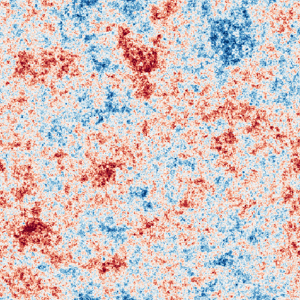
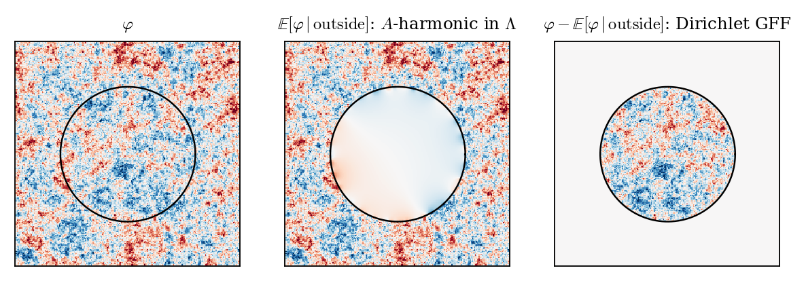

A Constructive Introduction to Quantum Field Theory
The Gaussian free field
Massimiliano Gubinelli | University of Oxford
SISSA lectures, Lecture 2 — notes: Lecture 2, §3
Last time. Positivity of the energy \(\Rightarrow\) imaginary time; vacuum expectations are moments of \(\mu (\mathrm{d} \varphi) \hspace{0.17em} \backprime\backprime = " \hspace{0.17em} Z^{- 1} \mathrm{e}^{- \int [\frac{1}{2} | \nabla \varphi |^2 + \frac{1}{2} m^2 \varphi^2 + V (\varphi)]} \mathcal{D} \varphi\); relativistic QFTs \(\leftrightarrow\) measures on \(\mathcal{S}' (\mathbb{R}^d)\) satisfying the OS axioms.
Today. The Gaussian part, rigorously.
Construction on \(\mathbb{T}^d\) and \(\mathbb{R}^d\); regularity.
Reflection positivity; the free field; Källén–Lehmann again.
Local operators: Wick powers.
Gaussian integration by parts: the Dyson–Schwinger (DS) equation.
DS characterises the GFF.
Definition and construction
Lecture 2
\(\mathcal{M}=\mathbb{T}^d_L = (\mathbb{R}/ L\mathbb{Z})^d\) or \(\mathbb{R}^d\);\(\mathcal{S} (\mathcal{M})\) smooth, resp. Schwartz, functions;\(\mathcal{S}' (\mathcal{M})\) with the cylinder (\(=\) Borel) \(\sigma\)-algebra.
\(A\), \(C\) are continuous bijections of \(\mathcal{S} (\mathcal{M})\) (Fourier multipliers \((|k|^2 + m^2)^{\pm 1}\)), and \(\|C\|_{L^2 \to L^2} \leqslant m^{- 2}\).
Definition. The Gaussian free field \(\mu_m\) is the centred Gaussian measure on \(\mathcal{S}' (\mathcal{M})\) with
Formally \(\mu_m (\mathrm{d} \varphi) \backprime\backprime = "Z^{- 1} \mathrm{e}^{- \frac{1}{2} \langle \varphi, A \varphi \rangle} \mathcal{D} \varphi\): the Gaussian part of the Euclidean action.
\(C\) has kernel \(G\):
\(\displaystyle G_m (x) = \int \frac{\mathrm{e}^{\mathrm{i} k
\cdot x}}{|k|^2 + m^2}
\frac{\mathrm{d} k}{(2 \pi)^d}\)
on \(\mathbb{R}^d\), and \(\sum_{n \in \mathbb{Z}^d} G_m (x + nL)\) on \(\mathbb{T}^d_L\).
Singular on the diagonal for \(d \geqslant 2\): the field is not a function. |
 A sample of the massive GFF on \(\mathbb{T}^2\) (\(m = 4\), \(512^2\) Fourier modes). |
Theorem. Let \((e_n)\) be a real orthonormal basis of eigenfunctions of \(- \Delta\) on \(\mathbb{T}^d_L\), \(- \Delta e_n = \kappa_n e_n\), \(\lambda_n = m^2 + \kappa_n\), and \((g_n)\) i.i.d. \(N (0, 1)\). For \(s > \frac{d}{2} - 1\),
converges a.s. and in \(L^2 (\mathbb{P}; H^{- s})\), and \(\text{Law} (\varphi) = \mu_m\).
Proof.
\(L^2\)-bounded \(H^{- s}\)-valued martingale \(\Rightarrow\) convergence. And \(\varphi (f) = \sum_n \lambda_n^{- 1 / 2} g_n \langle e_n, f \rangle\) is Gaussian with variance \(\sum_n \lambda_n^{- 1} \langle e_n, f \rangle^2 = \langle f, Cf \rangle\).
Bochner–Minlos
\(\Psi : \mathcal{S} (\mathbb{R}^d) \to \mathbb{C}\) continuous, positive definite, \(\Psi (0) = 1\) \(\Rightarrow\) there is a unique probability measure on \(\mathcal{S}' (\mathbb{R}^d)\) with characteristic functional \(\Psi\).
For \(\Psi (f) = \mathrm{e}^{- \frac{1}{2} \langle f, Cf \rangle}\): continuity from \(\langle f, Cf \rangle \leqslant m^{- 2} \|f\|_{L^2}^2\); positive definiteness from \(\Psi (f_j - f_k) = a_j a_k \mathrm{e}^{\langle f_j, Cf_k \rangle}\) and the Schur product theorem.
Regularity (sharp, Exercise 3.3):
| \(d = 1\) | \(d = 2\) | \(d = 3\) |
| stationary OU process | \(H^{- \kappa}\), \(\forall \kappa > 0\); not a function | \(H^{- 1 / 2 - \kappa}\) |
The Cameron–Martin space \(H^1\) (finite action) has measure zero.
Reflection positivity and the free field
Lecture 2
\(\mathcal{M}=\mathbb{R} \times N\), \(N =\mathbb{R}^{d - 1}\) or \(\mathbb{T}^{d - 1}_L\); \(\Theta (\tau, \textbf{x}) = (- \tau, \textbf{x})\); \(A = - \partial_{\tau}^2 + B\), \(B = m^2 - \Delta_N\), \(\omega = B^{1 / 2}\).
Proposition.
(a) \(C (\tau, \tau') =
\mathrm{e}^{- | \tau - \tau' | \omega} (2 \omega)^{- 1}\)
(operator-valued kernel).
(b) If \(\text{supp} f
\subset \{\tau > 0\}\):
(c) \(\mu_m\) on \(\mathbb{R}^d\) satisfies OS0–OS4.
Proof. (a) \(\int \mathrm{e}^{\mathrm{i} kt} (k^2 + w^2)^{- 1} \frac{\mathrm{d} k}{2 \pi} = \frac{\mathrm{e}^{- w |t|}}{2 w}\) and spectral calculus. (b) For \(\tau < 0 < \tau'\), \(| \tau - \tau' | = | \tau | + \tau'\): the kernel factorises. (c) OS3: \(\hat{\mu} (f_i - \Theta f_j) = a_i a_j \mathrm{e}^{\langle \Theta f_i, Cf_j \rangle}\); Schur.
OS reconstruction of \(\mu_m\) gives the free field of mass \(m\): Fock space over \(L^2 (N)\), \(H = \mathrm{d} \Gamma (\omega)\) (Nelson's free Markov field).
The time-zero field \(\varphi (0, \cdot)\) exists and is Gaussian with covariance \((2 \omega)^{- 1}\): the ground state measure \(\Omega_0^2 \mathcal{D} \varphi\) of the free Hamiltonian in the Schrödinger representation.
The GFF is the continuum limit of the lattice spin system of Lecture 1 with \(V = 0\) (Exercise 3.10).
Markov property (Nelson): rooted in the locality of \(A\).
Markov for \(\Lambda\): inside and outside are conditionally independent given the field near \(\partial \Lambda\).
The GFF is Markov for every open \(\Lambda\) (Nelson 1973): \(\mathbb{E} [\varphi (f) \hspace{0.17em} | \hspace{0.17em} \text{outside}] = \varphi (\Pi f)\), and \(\Pi f = Au\) is supported on \(\partial \Lambda\) because \(A = m^2 - \Delta\) is local. Given the outside: harmonic extension \(+\) independent Dirichlet GFF (next slide).
Markov \(+\) sharp \(\Sigma_0\) \(\Rightarrow\) RP: with \(\Sigma_0\) the time-zero field, \(\mu\) \(\Theta\)-invariant, \(\Theta\) trivial on \(\Sigma_0\):
Nelson's reconstruction (1973), before Osterwalder–Schrader.
Relevance: preserved by local perturbations \(\mathrm{e}^{- \int_{\Lambda} V}\) \(\Rightarrow\) \(P (\varphi)_2\) as classical statistical mechanics (Guerra–Rosen–Simon). Not stable under limits; OS use RP instead: not comparable (generalised free fields are RP, not Markov; the \(P^{- 1}\) field is Markov, not RP), but closed under weak limits.

\(h =\mathbb{E} [\varphi \hspace{0.17em} | \hspace{0.17em} \text{outside}]\) depends only on the field at the boundary; \(\psi\) is a Dirichlet GFF, independent of the outside.
Symanzik (1966, 1969): QFT through Schwinger functions as moments of a classical Markov field — the Euclidean programme.
Paths: \(C (x, y) = \int_0^{\infty} \mathrm{e}^{- m^2 t} p_t (x, y) \hspace{0.17em} \mathrm{d} t\) is the Green function of a killed Brownian motion. For \(\mathrm{e}^{- \int V} \mu_m\): a gas of paths and loops interacting through local times; for \(\varphi^4\), intersections are penalised (lattice: Brydges–Fröhlich–Spencer 1982; triviality for \(d > 4\)).
Loop soups (Lawler–Werner 2004): Poisson cloud of Brownian loops of intensity \(\alpha\); on a graph \(\mathbb{E} \hspace{0.17em} \mathrm{e}^{- \langle \chi, L \rangle} = \det (1 + C \chi)^{- \alpha}\).
Le Jan's isomorphism: for \(\alpha = \frac{1}{2}\) the occupation field is \(\frac{1}{2} \varphi^2\); in \(d = 2, 3\) the renormalised one is \(\frac{1}{2} : \varphi^2\):.
Lupu 2016: loop clusters \(=\) sign clusters of the cable-graph GFF. Werner 2016: spatial Markov property of loop soups. Qian–Werner 2019. Survey: Werner–Powell.
Wick rotation of \(W_2^{(M)}\): \(\int \mathrm{d} \Omega_M (\textbf{p}) \hspace{0.17em} \mathrm{e}^{- \omega_M (\textbf{p}) | \tau | + \mathrm{i} \textbf{p} \cdot \textbf{x}} = G_M (\tau, \textbf{x})\). Hence for any theory satisfying the axioms
The GFF is \(\rho = \delta_{m^2}\).
Short distances. \(G_M\) decreases in \(M\) and \(G_M / G_m \to 1\) at \(0\) (\(d \geqslant 2\)), so \(\liminf_{x \to 0} S_2^T (x) / G_m (x) \geqslant \rho ([0, \infty)) > 0\): never less singular than free. Scale invariance \(\Rightarrow\) unitarity bound \(\Delta \geqslant \frac{d - 2}{2}\) (Exercise 3.2).
Long distances. \(\text{supp} \rho \subset [m_0^2, \infty)\) \(\Leftrightarrow\) decay at least like \(\mathrm{e}^{- m_0 |x|}\): mass gap \(=\) clustering.
\(\rho = c_1^2 \delta_{m_1^2} + c_2^2 \delta_{m_2^2}\), \(0 < m_1 < m_2\):\(C_{\rho} = c_1^2 (m_1^2 - \Delta)^{- 1} + c_2^2 (m_2^2 - \Delta)^{- 1}\), the law of \(c_1 \varphi_1 + c_2 \varphi_2\) (independent GFFs). RP for each term \(\Rightarrow\) OS axioms.
It reconstructs to two free species
\(\mathcal{H}= \Gamma (\mathfrak{h}_{m_1}) \otimes
\Gamma (\mathfrak{h}_{m_2})\),\(\varphi = c_1 \varphi_{m_1} \otimes \mathbb{1} + c_2
\hspace{0.17em}
\mathbb{1} \otimes \varphi_{m_2}\),\(W_2 = c_1^2 W_2^{(m_1)} + c_2^2
W_2^{(m_2)}\).
Two kinds of free particles, created by
the same field; no scattering (truncated \(W_{n
\geqslant 3} = 0\)).
What is lost:
\((\Box + m_1^2) (\Box + m_2^2) \varphi = 0\), but no Klein–Gordon equation; \((\varphi (0), \pi (0))\) are not complete Cauchy data.
DS: \(\mathbb{E} [D_h F] =\mathbb{E} [F \varphi (C_{\rho}^{- 1} h)]\) with \(C_{\rho}^{- 1} = \dfrac{(m_1^2 - \Delta) (m_2^2 - \Delta)}{c_1^2 (m_2^2 - \Delta) + c_2^2 (m_1^2 - \Delta)}\) nonlocal; \(\varphi\) is not Markov.
The local fourth-order action \(\frac{1}{2} \langle \varphi, (m_1^2 - \Delta) (m_2^2 - \Delta) \varphi \rangle\) gives a Markov field with
so \(\rho = (\delta_{m_1^2} - \delta_{m_2^2}) / (m_2^2 - m_1^2)\) has a negative weight.
By Euclidean Källén–Lehmann it is not reflection positive: the mass \(m_2\) is a ghost of negative norm (Pais–Uhlenbeck, Lee–Wick).
Same for any \(1 / \hat{C} =\) polynomial of degree \(\geqslant 2\): \(s \hspace{0.17em} \hat{C} (s) \to 0\), while \(s \int \frac{\rho (\mathrm{d} M^2)}{s + M^2} \uparrow \rho ([0, \infty))\).
Moral
For Gaussian fields, positivity (OS) and locality of the Euclidean field equation (\(C^{- 1}\) a differential operator) together single out the free field: covariance \(c (m^2 - \Delta)^{- 1}\) (or white noise).
In Minkowski space, yes: all Wightman axioms hold, including locality (W3); positive energy, unique vacuum. Two free species: trivial and redundant, not inconsistent.
“Nonlocal” is Euclidean: no Markov property \(\Leftrightarrow\) \(\varphi\) alone is not a complete set of local degrees of freedom (no Cauchy problem, no Lagrangian in \(\varphi\) only). Cure: the pair \((\varphi_1, \varphi_2)\) is local and Markov.
Continuous \(\rho\) (a continuum of free species) is unphysical: no dynamical law of finite order, and too many localised states. Buchholz–Wichmann nuclearity (cf. Haag–Swieca) needs \(\sum_i n_i \mathrm{e}^{- \beta m_i} < \infty\): no sensible thermodynamics.
Interacting theories also have a continuum in \(\rho\), but produced by a local interaction: the Euclidean field equation of \(\Phi^4_2\), with \((m^2 - \Delta) \varphi + 4 \lambda : \varphi^3\): in the DS equation, is local.
Local operators: Wick products
Lecture 2
Interactions \(\int V (\varphi (x)) \mathrm{d} x\) need local functions of \(\varphi (x)\): regularise, subtract, remove the regularisation.
Lemma. \((X, Y)\) centred Gaussian, \(\mathbb{E}X^2 = a\), \(\mathbb{E}Y^2 = b\):
Proof. \(\mathbb{E} [\mathrm{e}^{sX - s^2 a / 2} \mathrm{e}^{tY - t^2 b / 2}] = \mathrm{e}^{st \hspace{0.17em} \mathbb{E} [XY]}\); compare coefficients of \(s^n t^k\).
Mollifier \(\eta_{\varepsilon}\), \(\varphi_{\varepsilon} = \eta_{\varepsilon} \ast \varphi\), \(G_{\varepsilon, \delta} = \eta_{\varepsilon} \ast \eta_{\delta} \ast G\), \(c_{\varepsilon} = G_{\varepsilon, \varepsilon} (0)\),
Theorem. If \(n (d - 2) < d\) (all \(n\) in \(d = 2\); \(n \leqslant 2\) in \(d = 3\)), then \(: \varphi^n : (f) = \lim_{\varepsilon \to 0} : \varphi_{\varepsilon}^n : (f)\) exists in \(L^2 (\mu_m)\), is independent of \(\eta\), and
If \(n (d - 2) \geqslant d\) and \(0 \leqslant f \mathrel{\not\equiv} 0\): \(\mathbb{E} [: \varphi_{\varepsilon}^n : (f)^2] \to \infty\).
1. Uniform bound. \(K (z) = 1 + \log_+ \frac{1}{|z|}\) (\(d = 2\)), \(1 + |z|^{2 - d}\) (\(d \geqslant 3\)). With \(r = \max (\varepsilon, \delta)\):
\(|z| \geqslant 4 r\): \(G_{\varepsilon, \delta} (z) \leqslant \sup_{|w| \geqslant |z| / 2} G (w) \leqslant CK (z)\);
\(|z| < 4 r\): \(G_{\varepsilon, \delta} (z) \leqslant \| \eta \|_{\infty} r^{- d} \int_{B (0, 6 r)} G \leqslant C \frac{1}{|B (0, 6 r) |} \int_{B (0, 6 r)} K \leqslant CK (r) \leqslant C' K (z)\).
2. Convergence. By the lemma,
by dominated convergence: \(K^n \in L^1_{\text{loc}} \Longleftrightarrow n (d - 2) < d\).
3. Divergence. Otherwise \(G^n \gtrsim |z|^{- n (d - 2)} \not\in L^1_{\text{loc}}\); Fatou.
Renormalisation: \(\varphi_{\varepsilon} (x)^n\) has no limit; subtracting \(c_{\varepsilon} \to \infty\) (via \(H_n\)) is the simplest counterterm. A different mollifier changes \(: \varphi^n\): by lower Wick powers with finite coefficients (Exercise 3.4).
Chaos: \(: \varphi^n : (f)\) lies in the \(n\)-th Wiener chaos; \(L^2 (\mu_m) \simeq\) Fock space over \(H^{- 1} (\mathcal{M})\). Hypercontractivity \(\|X\|_{L^p} \leqslant (p - 1)^{n / 2} \|X\|_{L^2}\) gives convergence in all \(L^p\) (and in \(\mathcal{C}^{- \kappa}\) for \(d = 2\)).
Towards \(\Phi^4_2\): on \(\mathbb{T}^2\), \(\int : \varphi^4 : \in \bigcap_p L^p\) and (Nelson) \(\mathrm{e}^{- \lambda \int : \varphi^4 :} \in L^1 (\mu_m)\).
Other local operators: \(\partial^{\alpha} \varphi\); in \(d = 2\) the Wick exponentials \(: \mathrm{e}^{\mathrm{i} \beta \varphi}\):, in \(L^2\) iff \(\beta^2 < 4 \pi\) (sine-Gordon; Exercise 3.6).
The Dyson–Schwinger equation
Lecture 2
If \(n (d - 2) \geqslant d\): \(\mathbb{E} [: \varphi_{\varepsilon}^n : (f)^2] \to \infty\). Worse: there is no random distribution at all, in any topology or on any space. Albeverio–Liang 2007: \(: \varphi^2 : (f)\), \(f > 0\), in \(d = 4\) (and \(d \geqslant 5\)) is a Hida distribution, not a random variable.
Proof. \(X_{\varepsilon} = : \varphi_{\varepsilon}^n : (f) \in \mathcal{H}_n\), \(\sigma_{\varepsilon} = \|X_{\varepsilon} \|_2 \to \infty\), \(\mathbb{E}X_{\varepsilon}^4 \leqslant 9^n \sigma_{\varepsilon}^4\). Paley–Zygmund, \(\mathbb{P} (Z > \theta \mathbb{E}Z) \geqslant (1 - \theta)^2 (\mathbb{E}Z)^2 /\mathbb{E}Z^2\), with \(Z = X_{\varepsilon}^2\):
Bounded chaos: the law is controlled by \(\sigma = \|X\|_2\). Upper tails \(\|X\|_p \leqslant (p - 1)^{n / 2} \sigma\) (hypercontractivity); \(\mathbb{P} (|X| > \frac{1}{2} \sigma) \geqslant c_n\) (Paley–Zygmund); \(\mathbb{P} (|X| \leqslant t \sigma) \leqslant Cnt^{1 / n}\) (Carbery–Wright). So: tight \(\Leftrightarrow\) bounded in \(L^2\); in probability \(\Leftrightarrow\) in \(L^2\).
Renormalising by \(\sigma_{\varepsilon}^{- 1}\) typically gives Gaussian limits (fourth moment theorem; Albeverio–Zhou 1996): the \(n\)-th power is lost.
Cylinder functions \(\mathcal{F}C^{\infty}_b \ni F (\varphi) = g (\varphi (f_1), \ldots, \varphi (f_n))\), \(g \in C^{\infty}_b\):
Lemma. \((Y, X_1, \ldots, X_n)\) centred Gaussian:\(\mathbb{E} [Y \hspace{0.17em} g (X)] = \sum_i \mathbb{E} [YX_i] \hspace{0.17em} \mathbb{E} [\partial_i g (X)]\).
Proof. For \(g = \mathrm{e}^{\mathrm{i} \langle u, \cdot \rangle}\): \(\mathbb{E} [Y \mathrm{e}^{\mathrm{i} \langle u, X \rangle}] = - \mathrm{i} \partial_{\theta} \mathbb{E}[\mathrm{e}^{\mathrm{i} \theta Y + \mathrm{i} \langle u, X \rangle}] |_{\theta = 0} = \mathrm{i} \sum_i u_i \mathbb{E} [YX_i] \mathbb{E} [\mathrm{e}^{\mathrm{i} \langle u, X \rangle}]\); then Fourier inversion and approximation.
Proposition. For all \(F \in \mathcal{F}C^{\infty}_b\), \(h \in \mathcal{S} (\mathcal{M})\):
Proof. \(\mathbb{E} [\varphi (Ah) \varphi (f_i)] = \langle Ah, Cf_i \rangle = \langle h, f_i \rangle\); apply the lemma.
With \(F = \varphi (f_2) \cdots \varphi (f_n)\) one gets the hierarchy
which with \(S_0 = 1\), \(S_1 = 0\) gives Wick's theorem (Exercise 3.7).
Minkowski: \((\Box + m^2) \varphi = 0\) and CCR.Euclidean: \((- \Delta + m^2) \varphi\) “\(=\)” \(\delta / \delta \varphi\) inside expectations; the contact terms come from the CCR (time ordering).
For a formal Gibbs measure \(\mu_V \propto \mathrm{e}^{- \int V (\varphi)} \mu_m\):
the Euclidean version of \((\Box + m^2) \varphi + V' (\varphi) = 0\).
\(V' (\varphi)\) must be a well-defined local operator: \(\Phi^4_2\): \(V' = 4 \lambda : \varphi^3\):; field equation for \(P (\varphi)_2\): Dimock–Glimm 1974, Albeverio–Röckner 1991. For \(\Phi^4_3\) the renormalised field equation goes back to Feldman–Rączka 1977; renormalised cubic term as a random distribution: Gubinelli–Hofmanová 2021.
\(\varphi^3 (x)\): product at one point. Point splitting: regular part of \(\varphi (y_1) \varphi (y_2) \varphi (y_3)\) as \(y_i \to x\).
Under the GFF (Wick):
regular part \(\to : \varphi^3 : (x)\); mollified: \(: \varphi^3 := \lim_{\varepsilon} (\varphi_{\varepsilon}^3 - 3 c_{\varepsilon} \varphi_{\varepsilon})\).
OPE (Wilson 1969, Zimmermann 1973): products at nearby points \(=\) local operators \(\times\) singular coefficients; composite operator \(=\) regular part. Field equation \((\Box + m^2) \varphi = - 4 \lambda N [\varphi^3]\).
The coefficients are those of the interacting theory. \(\Phi^4_2\): Gaussian subtraction suffices (Schrader 1974). \(\Phi^4_3\): an extra \(\delta_{\varepsilon} \varphi_{\varepsilon}\), \(\delta_{\varepsilon} \sim \lambda \log (1 / \varepsilon)\): \(4 \lambda \delta_{\varepsilon}\) is the sunset mass counterterm (Gubinelli–Hofmanová 2021).
Lecture 3: OPE of stochastic observables, explicit at every scale.
Theorem. Let \(\nu\) be a probability measure on \(\mathcal{S}' (\mathcal{M})\) with \(\varphi (f) \in L^1 (\nu)\) for all \(f\) and
Then \(\nu = \mu_m\).
Proof. Fix \(f\), take \(h = Cf \in \mathcal{S} (\mathcal{M})\) and \(F_s = \mathrm{e}^{\mathrm{i} s \varphi (f)}\), so \(D_h F_s = \mathrm{i} s \langle f, Cf \rangle F_s\). With \(\chi (s) =\mathbb{E}_{\nu} F_s\):
So \(\hat{\nu} (f) = \mathrm{e}^{- \frac{1}{2} \langle f, Cf \rangle}\) for all \(f\); linearity of \(f \mapsto \varphi (f)\) and Cramér–Wold give all finite-dimensional laws.
The integrability assumption is exactly what is needed for DS to make sense: \(\varphi (Ah)\) ranges over all \(\varphi (g)\).
DS for characteristic functions is a first-order linear ODE.
\(m = 0\) on the torus: no probability measure solves DS (take \(h = 1\)); work modulo constants (Exercise 3.9).
Finite dimensions: DS says \(\nabla (\mathrm{e}^S \nu) = 0\), so uniqueness is easy for any \(S\) (Exercise 3.8).
Interacting theories: DS is a singular nonlinear relation; uniqueness is hard and largely open. Results for the exponential model in \(d = 2\): De Vecchi–Gubinelli–Turra.
Next lecture
Lecture 3: stochastic quantisation; the GFF along a scale parameter; stochastic observables, products and OPE.
Lecture 4: Polchinski equation and its FBSDE; Wetterich equation; variational structure.
Lectures 5–6: a construction of \(\Phi^4_3\) on the torus via the FBSDE.
The pattern
Gaussian measure \(\xrightarrow{\text{local perturbation}}\) renormalised DS equation / scale dynamics \(\xrightarrow{\text{estimates}}\) Euclidean QFT \(\xrightarrow{\text{OS}}\) relativistic QFT.
Exercises (numbering of the notes)
|
Reading
|